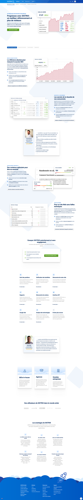

// 03 — Projekte
Ausgewählte
Arbeiten
Die bestehende Webseite war vier Jahre alt und benötigte einen grundlegenden optischen Refresh. Als Pilot wurde die .fr-Domain gewählt — mit wenigen Seiten und geringem Traffic bleibt potenzielle Fehlertoleranz auf Kundenseite minimal.
Die Toolbox ist das Herzstück und Hauptprodukt des Unternehmens — eine komplexe Softwareplattform mit tiefen Datenbankstrukturen, an der ein cross-funktionales Team aus Backend, Frontend und Design gemeinsam arbeitet. Ziel war es, die Software nicht nur optisch zu modernisieren, sondern sie für Nutzer spürbar einfacher bedienbar zu machen.
// Arbeitsproben
Vorher vs. Nachher
Landing Page — Gesamtansicht

Alte Webseite · Organisch gewachsen · WordPress · 4 Jahre alt

Redesign · Tailwind CSS · Klare Struktur · Bessere Performance
Footer — Detailansicht
Toolbox — Domain Überblick